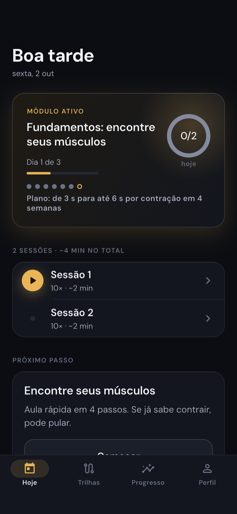
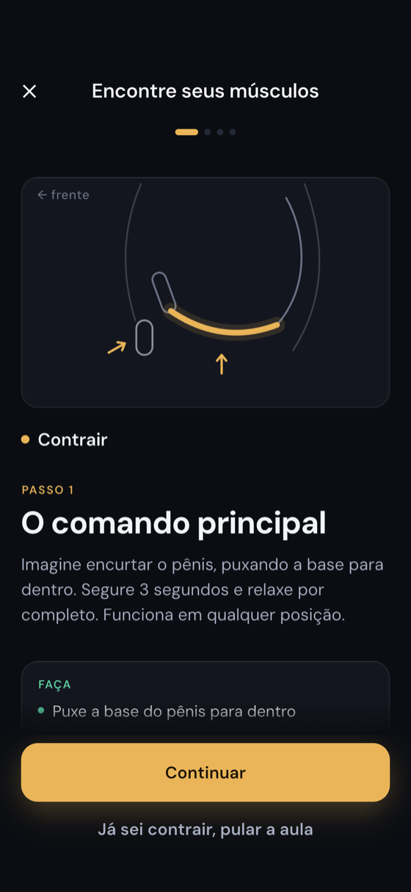
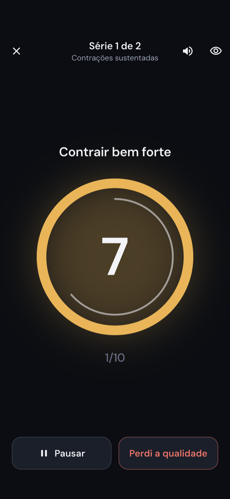

Um treinador de bolso para a musculatura do centro do corpo. Você começa com cerca de 4 minutos por dia e o plano cresce no seu ritmo, com player guiado por voz e progresso em números que você entende.
Em breve na App Store e no Google Play



Séries, tempos e descanso calculados para o seu nível. Começa com cerca de 4 min por dia. Lembrete no seu horário.
Anel que marca contrair e relaxar, cues curtos e voz opcional. Vibra enquanto você contrai. Modo discreto.
28 módulos que se abrem conforme você avança. Autoteste a cada 7 dias e progresso por semana.
Nome neutro e bloqueio por biometria. Dados cifrados no aparelho e na transmissão. Sem anúncios, sem rastreamento, sem venda de dados.